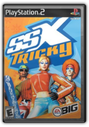
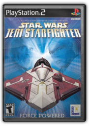
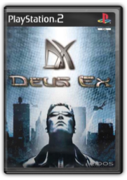
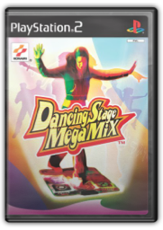
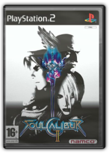
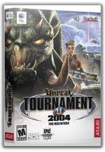
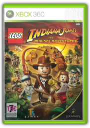

|

SSX Tricky


In the PlayStation 2's first few months there were only a few standout games; one of them, SSX, brought snowboarding to people who didn't even like snowboarding. Now, only a year later, PS2 fans get a new reason to stay indoors during the cold winter months. SSX Trickyis its name, and it more than lives up to the moniker.

Star Wars: Jedi Starfighter

Jedi Starfighteris the latest in that much abused of gaming genres, the Star Warsgame. Included in the few gems was Jedi's prequel, Star Wars: Starfighter, a cockpit-view shooter that stood out among early PS2 titles. Jediserves more as an extra set of missions than a full-blown follow-up, but there are some new features and the gameplay feels a lot smoother. The finest of these new additions are the Force weapons; when playing as the Starfighter itself, you're able to utilise the Force to unleash mass devastation on your foes. The 15 missions alternate between control of this craft and a more robust ship well stocked with missiles; despite being based around a basic protect-and-shoot premise, the missions are nicely varied in style.

Deus Ex
Console owners have been waiting a long time for Deus Ex. The seminal PC game, which seamlessly blends action, adventure and role-playing elements into one near perfect package, has now landed on the PS2, and luckily it's pretty much intact.

Dancing Stage MegaMix
Everybody move your feet—it—it's time for fun: whether you're a beginner, a fanatic or looking for a new exercise routine, Dancing Stage MegaMix, which features tracks by Kylie Minogue, Sugababes, Elvis vs JXL and The Cure, is going to be an enjoyable addition to your PS2 collection.

SoulCalibur II (PS2)
If the world was a fair place then the name of SoulCalibur—peculiar spelling mistake and all—would be the most famous in beat-'em-up history. Unfortunately, though, the original arcade game was only converted to the Dreamcast (despite the prequel, Soul Blade, being on the PSone), thus dooming it to relative obscurity.

Unreal Tournament 2004 (Mac)
Unreal Tournament 2004 - travel a century into the future, where humanity exists only for the sport of alien conquerors. Reload and ride out to the arenas for all-new action and combat! Take warfare to the next level in the amazing new Onslaught mode  Burnout: Revenge (PS2)
Burnout: Revenge (PS2)
Even amongst EA's own stable of titles, Burnoutis regarded by many as the best arcade racer of them all and this fourth iteration, subtitled Revenge, looks like being a solid addition to the line. It seems to have wisely realised that the best bit in any of the Burnoutgames is the amount of destruction you can cause as you race and that all that winning a race malarkey is almost a secondary concern.

Lego: Indiana Jones
Activision
LEGO Indiana Jones: The Original Adventures takes the fun and creative construction of LEGO and combines it with the wits, daring and non-stop action from the original cinematic adventures that enthralled audiences everywhere (Indiana Jones and the Raiders of the Lost Ark, Indiana Jones and the Temple of Doom and Indiana Jones and the Last Crusade). With a unique tongue-in-cheek take on the original adventures, LEGO Indiana Jones follows Dr. Jones escapades through the jungles of South America to the mountaintops of India. Fans can build, battle and brawl their way through their favorite cinematic moments, from Indy's entanglements with snakes to his dashing boulder run. |

 Made with Delicious Library
Made with Delicious Library
Springfield, State zipflap congrotus delicious library Clancy, Liam